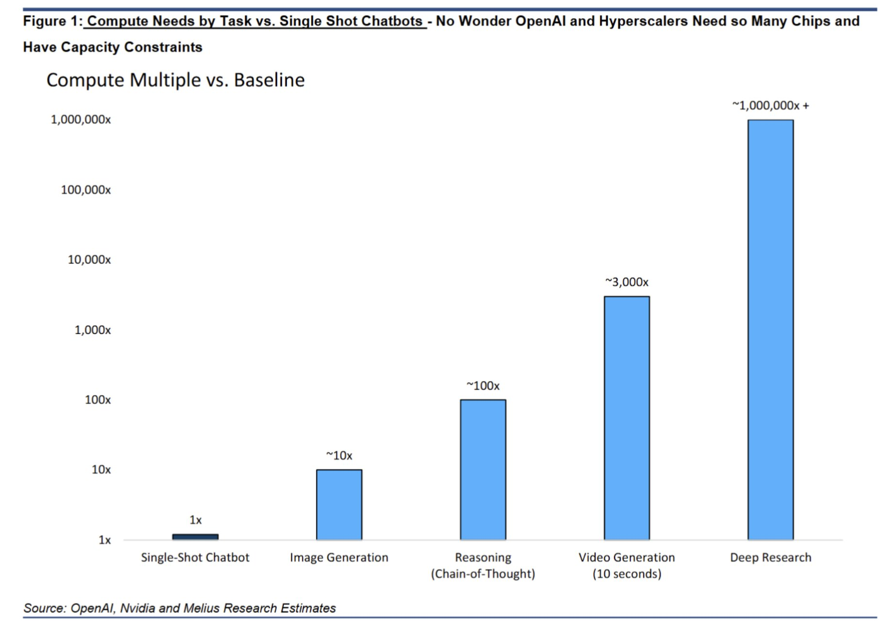
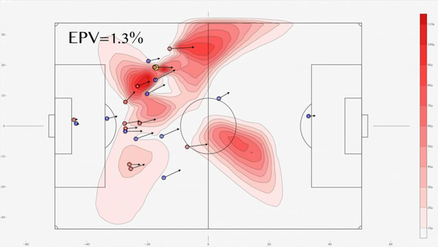
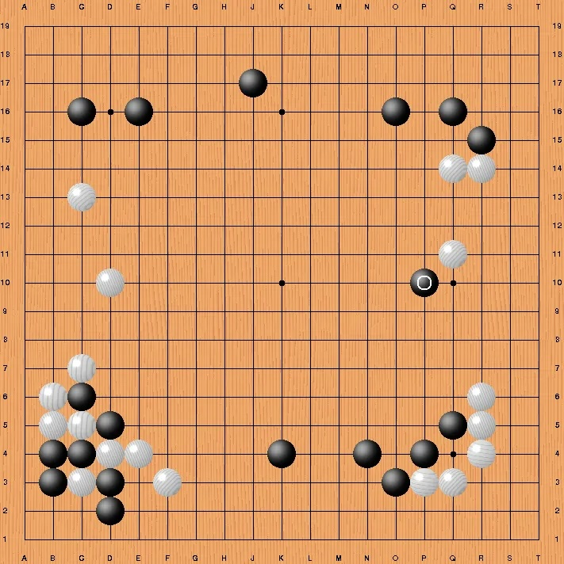

graph LR
A[Input Data x] --> B[Algorithm f]
B --> C[Prediction y]
The Modern AI Playbook
If you tell me precisely what it is a machine cannot do, then I can always make a machine which will do just that. —John von Neumann (1956)
When you open an Amazon page, there are many personal suggestions of goods to purchase. By analyzing previous product pages visited and purchases made by you and others who have bought similar products, Amazon uses AI and machine learning to predict what might interest you the next time you shop. When you apply for a loan online, you typically get an immediate answer after filling out an application. The information you provide, combined with your credit history pulled from a credit bureau, is used by a predictive model to determine with high confidence whether you are likely to default on the loan.
What do Amazon and the finance industry have in common? They all use AI-driven methods to improve operations. Automating routine workflows enables organizations to scale operations and tackle challenges that remain too complex for human labor alone. AI-driven methods are becoming increasingly important in all industries.
What are the key ingredients of AI-driven methods? At the heart of modern AI lie three fundamental pillars:
- Bayesian Learning: A framework for reasoning under uncertainty. Bayesian methods quantify what we know and don’t know, telling us how to update beliefs as new evidence arrives. This is essential in applications from drug discovery to climate modeling, where uncertainty is as important as the prediction itself.
- Statistical Learning: The collection of algorithms—from regression to decision trees—that extract patterns from data. These tools provide the mathematical rigor for recognizing relationships and making predictions.
- Deep Learning: Neural network architectures that learn hierarchical representations of data. By composing simple operations across many layers, these models capture complex, non-linear relationships in high-dimensional data, powering capabilities like vision, language understanding, and autonomous agents.
These software foundations are powered by High-Performance Computing Infrastructure. GPUs, originally designed for gaming, now make it feasible to process massive datasets and train billion-parameter models.
The interplay creates a virtuous cycle: computing power enables larger models (Deep Learning), while mathematical frameworks (Bayesian and Statistical Learning) ensure these models reason correctly and generalize well. Let’s clarify the terminology used to describe this landscape.
- Artificial Intelligence (AI), coined by John McCarthy in 1955, is the broad science of creating intelligent machines. It encompasses everything from the logic-based “Old AI” to modern data-driven approaches.
- Machine Learning (ML) is the subset of AI that focuses on learning from data. Rather than using explicit rules, ML systems find statistical structures in examples to make predictions or decisions.
- Deep Learning is a specialized branch of ML using neural networks with many layers (“deep”) to learn abstract representations of data, such as features in an image or concepts in text.
Data Science is the interdisciplinary field that uses these tools—along with statistics and software engineering—to extract insights from data.
Over the last three decades, a major shift has occurred from “hardcoded” expertise to learned patterns. IBM’s Deep Blue (1997) played chess using rules and heuristics crafted by grandmasters. In contrast, DeepMind’s AlphaGo Zero (2017) learned to play Go, Chess, and Shogi solely by playing against itself, deriving strategies that surpassed human play without any human instruction (Silver et al. 2017). This transition—replacing engineered rules with learned rules—defines the modern AI era.
The key concept behind many modern AI systems is pattern-recognition. A “pattern” is a prediction rule that maps an input to an expected output, and “learning a pattern” means fitting a good prediction rule to a dataset. In AI, prediction rules are often referred to as “models.” The process of using data to find a good prediction rule is often called “training the model.” Mathematically, we can express this as learning a function \(f\) that maps inputs \(x\) to outputs \(y\), so that \(y = f(x)\).
For instance, in a large language model, \(x\) represents a question and \(y\) represents the answer. In a chess game, \(x\) represents the board position and \(y\) represents the best move. The learning process involves finding the function \(f\) that best captures the relationship between inputs and outputs by examining many examples of input-output pairs in a training dataset. Deep learning excels at discovering complex, nonlinear functions \(f\) when the relationship between \(x\) and \(y\) is too intricate to specify manually—such as the mapping from raw pixel values to semantic image content, or from question text to answer text.
Generative AI
By 2025, Generative AI has moved beyond hype into practical application across personal and professional domains. A Harvard Business Review article by Marc Zao-Sanders, “How People Are Really Using Gen AI in 2025,” reveals a notable trend: the top use cases have shifted from purely technical applications toward emotive and personal uses. “Therapy/companionship” now leads the list, followed by “Organizing my life,” “Finding purpose,” “Enhanced learning,” and “Generating code (for pros).”
Users are turning to Gen AI for mental health support (especially in regions with limited access to therapists), daily habit planning, study guides, meal planning, travel itineraries, and drafting appeal letters. Gen AI users are also developing a deeper understanding of the technology’s limitations, including concerns around data privacy and over-reliance.

The computer therapist is not something new. In 1966, Joseph Weizenbaum created ELIZA, a computer program that could simulate a conversation with a psychotherapist. ELIZA used simple pattern matching to respond to user inputs, creating the illusion of understanding. The program worked by identifying keywords in user statements and transforming them into questions or reflective responses. For example, if a user typed “I am sad,” ELIZA might respond with “Why do you think you are sad?” or “Tell me more about being sad.” While it was a groundbreaking achievement at the time, it lacked true comprehension and relied on scripted responses.
What surprised Weizenbaum was not just that ELIZA worked, but how readily people attributed human-like understanding to the program. Users began forming emotional attachments to ELIZA, sharing deeply personal information and believing the computer genuinely cared about their problems. Some even requested private sessions without Weizenbaum present. This phenomenon, now known as the ELIZA effect, describes the human tendency to unconsciously assume computer behaviors are analogous to human behaviors, even when we know better intellectually.
The ELIZA effect reveals something deep about human psychology: we are predisposed to anthropomorphize systems that exhibit even rudimentary conversational abilities. This has significant implications for modern AI systems. Today’s large language models like ChatGPT and Claude are vastly more sophisticated than ELIZA, yet they still operate through pattern matching and statistical prediction rather than genuine understanding. However, their responses are so fluent and contextually appropriate that the ELIZA effect is amplified dramatically. Users often attribute consciousness, emotions, and intentionality to these systems, leading to both beneficial therapeutic interactions and concerning over-reliance on AI for emotional support.
Understanding the ELIZA effect is important as we navigate the current AI landscape. While AI can provide valuable assistance for mental health support, learning, and personal organization, we must remain aware that these systems are sophisticated pattern matchers rather than conscious entities. The therapeutic value may be real—many users do find comfort and insight through AI interactions—but it stems from the human capacity for self-reflection prompted by the conversation, not from genuine empathy or understanding on the machine’s part.
In his talk on “Why are LLMs not Better at Finding Proofs?”, Timothy Gowers observes that LLMs can narrow down search spaces but falter when stuck, relying on intelligent guesswork rather than systematic problem-solving. Unlike humans, who respond to failed attempts with targeted adjustments based on what went wrong, LLMs often make another guess uninformed by previous failures. Humans build solutions incrementally; LLMs tend to skip intermediate steps and jump directly to answers, missing the structured, iterative reasoning that characterizes human problem-solving.
Despite these limitations in systematic reasoning, deep learning excels through pattern recognition. Consider the classical three-body problem in physics, which has resisted analytical solution for centuries. Deep neural networks have approximated solutions by learning the underlying dynamics from training data, generating accurate orbital trajectory predictions where closed-form solutions remain elusive.
While Deep Learning excels at recognizing patterns, we need a robust framework for reasoning about the uncertainty inherent in these predictions. This brings us to the Bayesian perspective.
Levels of Automation: AIQ, AGI, ASI
We can categorize AI systems by their level of autonomy. AIQ (Artificial Intelligence Quotient) represents the current paradigm where humans and machines work synergistically. As described by N. G. Polson and Scott (2018), this intelligence augmentation allows humans to offload routine tasks while retaining strategic control. Current systems, including LLMs, fall into this category—they are powerful tools that amplify human capability but lack independent volition.
In contrast, AGI (Artificial General Intelligence) refers to hypothetical systems matching human performance across all cognitive tasks, while ASI (Artificial Superintelligence) describes systems surpassing human intelligence in every dimension. While AGI and ASI remain topics of intense research and debate, this book focuses on the practical, mathematical foundations of the AIQ systems building the modern economy today.
Software Development: The First Frontier for Agents
Andrej Karpathy’s talk, “Software Is Changing (Again),” illustrates a clear “product-market fit” for AI agents. Software development has become the first domain where agents have demonstrated significant, quantifiable impact, fundamentally transforming how code is written. Karpathy describes this new era as “Software 3.0,” where natural language becomes the primary interface.
| Paradigm | “Program” is… | Developer’s main job | Canonical depot |
|---|---|---|---|
| Software 1.0 | Hand-written code | Write logic | GitHub |
| Software 2.0 | Neural-net weights | Curate data & train | Hugging Face |
| Software 3.0 | Natural-language prompts | Guide & Verify | Prompt libraries |
This success in software engineering serves as a blueprint. The patterns established here—iterative planning, tool use, and verification—are already spreading to high-stakes fields like finance and healthcare, where agents will likely follow a similar trajectory of adoption.
AI Agents: From Prediction to Action
The concept of software acting on our behalf has deep roots. Hal Varian’s 2010 framework of “Computer Mediated Transactions” (Varian 2010) foresaw a world where computers would automate not just calculation, but routine decision-making processes—monitoring markets, managing inventory, and coordinating complex transactions. This vision is now being realized and surpassed by modern AI Agents.
While a Language Model (LLM) is like a brain in a jar—capable of thought (prediction) but isolated—an Agent is an LLM equipped with tools and agency. Agents can browse the web, execute code, query databases, and interact with other software systems to complete multi-step workflows. Unlike traditional rigid software, agents dynamically adapt their behavior: if a first attempt fails, they can “reason” about the error and try a different strategy.
Building reliable agents requires robust orchestration frameworks that manage memory, planning, and tool execution. An example of a company that focuses on AI workloads is Nebius. Unlike traditional cloud architecture designed for general web services, their platform rethinks how data is stored, processed, and computed upon to support the massive parallel throughput required by modern AI models. This shift—from static models to dynamic agents—marks the transition from software that answers questions to software that iteratively plans and executes tasks in the digital and physical economy.
Physical AI: Embodied Intelligence
While Large Language Models have mastered the digital realm of text and code, a new frontier is emerging: Physical AI. This field aims to give artificial intelligence a physical body, enabling it to perceive, understand, and interact with the tangible world. Unlike digital AI that processes symbols, Physical AI must contend with the chaotic laws of physics—gravity, friction, and unstructured environments. This represents a significant leap from “narrow” robotics, which followed rigid, pre-programmed instructions, to “embodied” intelligence that can learn, adapt, and operate alongside humans.
The convergence of vision-language models and advanced robotics is accelerating this shift. Companies like Tesla with Optimus, Boston Dynamics, and Figure are developing humanoid robots capable of performing complex tasks, from folding laundry to assembling cars. A key enabler is “sim-to-real” reinforcement learning, where robots train for millions of hours in hyper-realistic physics simulations (like NVIDIA’s Isaac Lab) before downloading those learned skills into a physical body. This allows them to master movements that would take decades to learn in the real world.
The Human Dimension: Dignity and Economics
“I visualize a time when we will be to robots what dogs are to humans. And I am rooting for the machines.” - Claude Shannon
As we delegate more authority to algorithms, the warnings of the cybernetics era become urgently relevant. Norbert Wiener, the mathematician who founded cybernetics and whose work laid foundations for modern control systems and artificial intelligence, was among the first to recognize both the power and peril of automation. Writing in The Human Use of Human Beings (1950), Wiener articulated a prescient warning:
If we combine our machine potentials of a factory with the valuation of human beings on which our present factory system is based, we are in for an Industrial Revolution of unmitigated cruelty. We must be willing to deal in facts rather than fashionable ideologies if we wish to get through this period unharmed.
Wiener’s concern was fundamentally about human identity and dignity. If workers derive their sense of worth from their role as factory laborers, and automation eliminates those roles, what becomes of their identity? This was not merely an economic question about displaced workers finding new employment—it was a deeper psychological and existential challenge. Wiener recognized that the transition to an automated economy would require not just retraining programs, but a fundamental reimagining of how humans find meaning and value in a world where machines perform an ever-expanding range of tasks.
Wiener rejected the notion that automation would deliver humanity into a comfortable retirement:
The world of the future will be an even more demanding struggle against the limitations of our intelligence, not a comfortable hammock in which we can lie down to be waited upon by our robot slaves.
This vision stands in stark contrast to utopian fantasies of automated abundance. Wiener foresaw that as machines took over routine cognitive and physical tasks, the remaining challenges would become more abstract, more complex, and more demanding of human creativity and judgment. The age of AI would not eliminate work—it would transform it into work that pushes against the very boundaries of human capability.
John Maynard Keynes, writing during the Great Depression in his 1930 essay Economic Possibilities for our Grandchildren (1930), offered an optimistic counterpoint. Keynes predicted that within a century—roughly by 2030—technological progress and capital accumulation would “solve the economic problem” for humanity. By this he meant that productivity gains would become so substantial that meeting humanity’s basic material needs would require only minimal labor. Keynes envisioned a future where people might work perhaps fifteen hours per week, devoting the remainder of their time to leisure, culture, and the pursuit of fulfilling activities.
Keynes distinguished between absolute needs—those we feel regardless of others’ circumstances, such as food, shelter, and safety—and relative needs—our desire to feel superior to our fellows. He argued that while relative needs are insatiable, absolute needs could be satisfied through technological abundance. Once this occurred, humanity would face a new challenge: learning to live wisely with leisure. Keynes worried that without the structure and purpose provided by work, many people would struggle to find meaning. He wrote that humanity would need to cultivate the “art of life itself” and learn to value activities pursued for their own sake rather than for economic gain.
Keynes’s prediction that technology would dramatically increase productivity proved accurate. However, his assumption that increased productivity would translate into reduced working hours has not materialized as he expected. Rather than collectively choosing leisure, advanced economies have channeled productivity gains into increased consumption, higher living standards, and the expansion of service industries. The phenomenon of “Veblenian” conspicuous consumption helps explain why.
Thorstein Veblen, writing even earlier in The Theory of the Leisure Class (1899), offered a more cynical analysis of how elites use both leisure and consumption to signal status. Veblen introduced the concept of conspicuous consumption—the purchase of goods and services primarily to display wealth and social status rather than to satisfy genuine needs. The leisure class, in Veblen’s analysis, derives its social standing not from productive labor but from the ostentatious display of time and resources devoted to non-productive activities.
Veblen’s insight reveals why Keynes’s vision of universal leisure has not materialized. In modern economies, work serves not only to produce income for consumption but also to confer identity, status, and social belonging. High-status professionals often work longer hours than necessary for material sustenance precisely because their work signals competence, dedication, and membership in elite circles. The “leisure” time that technology has created has often been filled not with Keynesian cultivation of the art of life, but with Veblenian status competitions—from luxury travel photographed for social media to the accumulation of credentials through continuous education.
Moreover, as AI automates routine tasks, the remaining human work increasingly involves activities that are themselves forms of status display: strategic decision-making, creative innovation, and high-stakes problem-solving. These activities signal membership in cognitive elites in ways that parallel Veblen’s leisure class. The AI era has not eliminated status competition through work—it has transformed the nature of the work that confers status.
In his later work, The Engineers and the Price System (1921), Veblen examined the role of technical experts in modern industrial society. He distinguished between two fundamentally different modes of economic organization: the industrial system, driven by engineers and technical specialists focused on efficient production, and the price system, controlled by financiers and business owners focused on profit extraction. Veblen’s analysis is prescient for understanding tensions in the contemporary AI economy. Today’s “engineers”—the data scientists, machine learning researchers, and software developers building AI systems—possess technical knowledge that enables unprecedented productive capabilities. Yet the deployment of these capabilities is mediated through corporate structures optimized for profit maximization rather than social welfare.
The synthesis of these perspectives suggests that successfully navigating the AI transition requires more than technical solutions or economic policies. It requires cultivating new sources of meaning, identity, and social connection that are not solely dependent on traditional employment. It requires resisting purely Veblenian status competitions in favor of Keynesian cultivation of intrinsically valuable activities. And it requires heeding Wiener’s warning that the future will demand more, not less, of our intelligence, creativity, and ethical judgment—even as machines handle an expanding range of routine tasks.
Large Language Models (LLMs)
The most visible manifestation of the new AI age is Large Language Models. ChatGPT reached 100 million users in 2 months after its November 2022 launch—a milestone that took the internet 7 years and television 13 years. Unlike previous innovations requiring infrastructure changes, AI chatbots provide immediate value through simple web interfaces.
The algorithmic foundations of deep learning have existed for decades: Kolmogorov’s superposition theorem (1956), Robbins-Monro’s stochastic approximation (1951), Tikhonov regularization (1940s), Polyak momentum optimization (1964), and Galushkin’s backpropagation (1972) constitute the “old math” that enables modern AI alongside new GPU chips. The 2012 breakthrough with AlexNet would have been impossible without GPUs performing thousands of matrix multiplications simultaneously and convolutional neural networks developed by Fukushima in the early 80s. Current models rely on training clusters of thousands of interconnected GPUs working for weeks.
GPU computational power has grown over 400,000x in two decades—from the 0.23 TeraFLOPS of 2006’s GeForce 7900 GTX to projected 100 PetaFLOPS for 2027’s Nvidia Rubin Ultra. This exponential growth, driven successively by gaming, cryptocurrency mining, and AI video generation, has made GPUs the engines of the deep learning era. Modern architectures feature specialized tensor cores and mixed-precision arithmetic (FP8/FP4) optimized for AI workloads rather than traditional floating-point operations.

The computational demands of AI tasks scale exponentially (Figure 2): while a single-shot chatbot represents the baseline (1x), image generation requires ~10x more compute, reasoning tasks need ~100x, video generation demands ~3,000x, and deep research capabilities require over 1,000,000x. Commercial LLMs measure computation in tokens—units of text processed as inputs or outputs—rather than traditional FLOPS. Early LLMs required fine-tuning for specific tasks; current models work effectively through in-context learning, where task-specific instructions and data are provided as context.
This exponential scaling illustrates a modern instance of Jevons paradox. In 1865, economist William Stanley Jevons observed that improvements in steam engine efficiency did not reduce coal consumption—instead, efficiency gains made coal-powered machinery economically viable for more applications, increasing total coal use. The same dynamic applies to AI compute: as models become more efficient and inference costs drop, usage expands faster than efficiency improves. Cheaper tokens enable longer conversations, more complex reasoning chains, and new applications like real-time video generation that were previously cost-prohibitive. The result is that total compute consumption continues to grow despite—and because of—efficiency improvements.
While GPUs have driven the current AI innovation, the quest for quantum supremacy represents the next frontier. As Feynman’s seminal paper first discussed, the principles of quantum physics suggest a new foundation for computation. The work by N. Polson, Sokolov, and Xu (2023) on quantum Bayesian computation explores quantum algorithms that promise exponential speed-ups for Bayesian and neural network methods. While stable quantum computers remain in development, the algorithms are already being designed.
Business Models and Market Impact
Four distinct business models have emerged among leading LLM providers:
- Anthropic (Claude) focuses on enterprise safety, using Constitutional AI training methods that emphasize nuanced reasoning and acknowledgment of uncertainty—attracting regulated industries and research institutions.
- Google (Gemini) leverages deep integration with its ecosystem—Search, Workspace, Android, and Cloud—to distribute AI capabilities at scale. With access to proprietary data (YouTube, Maps, Scholar) and custom TPU hardware, Google competes on both consumer reach and enterprise infrastructure.
- OpenAI (ChatGPT) pioneered the subscription-plus-API model, combining consumer subscriptions ($20/month for Plus) with enterprise API pricing. Microsoft’s strategic partnership provides exclusive cloud infrastructure.
- Perplexity reimagines search as a citation-based conversational engine, synthesizing information from multiple sources with attribution rather than returning links.
LLMs have found immediate applications across industries: customer service teams report 30-50% cost reductions with chatbots handling routine inquiries; coding assistants help developers complete tasks 55% faster; legal firms compress weeks of contract review into hours. The pattern is consistent: LLMs excel at processing, summarizing, and generating text-heavy work that previously required skilled human labor. Most deployments involve human oversight, but they fundamentally change the economics of knowledge work.
Bayes: Evidence as Negative Log-Probability
Imagine you’re searching for something lost—a missing ship, a hidden treasure, or a city abandoned centuries ago. You have multiple clues: historical documents, geological surveys, satellite imagery, and expert opinions. How do you combine all these disparate pieces of evidence into a coherent search strategy? This is exactly the type of problem where Bayesian reasoning shines, and it’s a powerful framework that underlies many modern AI applications.
The Bayesian approach provides a principled mathematical framework for updating our beliefs as new evidence arrives. At its core is Bayes’ rule, which tells us how to revise the probability of a hypothesis given new data:
\[ P(\text{hypothesis} \mid \text{data}) = \frac{P(\text{data} \mid \text{hypothesis}) \times P(\text{hypothesis})}{P(\text{data})} \]
While this formula is elegant, what makes Bayesian reasoning especially powerful is a simple mathematical trick: when we work with logarithms of probabilities, combining evidence becomes as simple as addition. Taking the logarithm of both sides of Bayes’ rule gives us:
\[ \log P(\text{hypothesis} \mid \text{data}) = \log P(\text{data} \mid \text{hypothesis}) + \log P(\text{hypothesis}) - \log P(\text{data}) \]
This transformation reveals that the log-posterior (our updated belief) is simply the sum of the log-likelihood (evidence from data) and the log-prior (our initial belief), minus a normalization constant. In other words, on the log scale, we’re just adding up different sources of evidence. Each piece of information contributes its “weight” to the total, and we combine them linearly.
This additive property has direct practical implications. When you have multiple independent sources of evidence—say, historical documents, geological surveys, and geophysical measurements—each contributes a term to the sum. Strong evidence adds a large positive contribution, weak evidence adds little, and contradictory evidence subtracts from the total. The beauty is that the mathematical framework handles all the bookkeeping automatically.
An application of this principle comes from the world of mineral exploration. In 2022, Aurania Resources announced that they had found the location of Logroño de los Caballeros, a “lost city” of Spanish gold miners that had been abandoned in the jungles of Ecuador for over 400 years. The discovery was made possible by Bayesian search theory, developed by Larry Stone who has a strong track record of finding lost objects—including the USS Scorpion nuclear submarine and Air France Flight 447.
Larry Stone’s approach to finding Logroño exemplifies how Bayesian reasoning combines multiple sources of evidence. The team assembled a mountain of heterogeneous information:
- Historical documents: Spanish colonial records from the 1580s-1590s describing Logroño’s location relative to rivers and other settlements
- Archaeological evidence: A 1574 map by Mendez showing approximate locations
- Geological data: Stream sediment samples analyzed for gold content
- Geophysical surveys: Magnetic and radiometric measurements
- Modern geography: LiDAR topographic data and current river systems
- Geochemical patterns: Distribution of minerals indicating potential gold sources
Each of these information sources provided a “clue” that was more or less reliable, more or less precise, and potentially contradictory with others. How do you reconcile a 450-year-old account that “Logroño was half a league from the Rio Zamora” with geological evidence suggesting gold-bearing formations in a different area?
Bayesian search theory provides the answer. Bayesian reasoning assigns each piece of evidence a reliability weight and used Bayes’ rule to generate probability maps. Historical documents considered highly reliable (such as official Spanish reports) contributed strongly to the probability distribution, while more ambiguous sources contributed less. Larry Stone, explained: “Our success in integrating historical documents with scientific data using Bayesian methods opens a range of potential applications in the mineral and energy exploration sectors.”
The power of this approach became clear when they combined evidence that initially seemed contradictory. A critical breakthrough came from multiple corroborating accounts: Juan Lopez de Avendaño reported in 1588 that Logroño was half a league from the Rio Zamora; that same year, two soldiers drowned crossing “the river” to fight an uprising; in the mid-1590s, seven soldiers drowned trying to reach a downstream garrison; and a 1684 Jesuit account described an elderly woman who remembered hearing Logroño’s church bells from her village at the mouth of the Rio Zamora. Each piece of evidence individually was ambiguous—which river? how far is “half a league”?—but together they pointed to a specific location along the Rio Santiago valley.
On the log-probability scale, each piece of evidence either added to or subtracted from the likelihood of different locations. Strong, consistent evidence (multiple drowning accounts suggesting a major river crossing) added significant weight. Weak or contradictory evidence contributed less. The final probability map was literally the sum of these contributions, with the peak probability occurring where the most evidence converged. Figure 3 shows the likelihood ratio surfaces generated for copper, silver, and gold deposits—visual representations of how different evidence sources combine to create probability distributions across the search area.
The result was dramatic: Bayesian reasoning generated probability maps that identified the Rio Santiago valley as the most likely location of Logroño, and subsequent fieldwork confirmed extensive alluvial gold deposits and active artisanal mining exactly where the Bayesian analysis predicted. As Dr. Keith Barron, Aurania’s CEO, noted: “This key discovery can ultimately lead us to Logroño’s gold source.” The location that seemed to reconcile all the disparate evidence—Spanish colonial records, drowning accounts, geological surveys, and modern geography—turned out to be correct.
This example illustrates why the Bayesian framework is so powerful in modern AI applications. Machine learning models constantly face the challenge of combining multiple sources of information: pixels in different regions of an image, words in different parts of a sentence, measurements from different sensors. The additive property of log-probabilities provides an efficient computational framework for this fusion. When you train a deep learning model, the loss function essentially measures how well the model combines evidence from the training data with prior knowledge (encoded in the model architecture and regularization). Optimization algorithms adjust model parameters to maximize this combined evidence, updating beliefs exactly as Bayes’ rule prescribes.
The mathematical elegance of working with log-probabilities extends beyond search problems. In natural language processing, transformer models compute attention weights that determine how much “evidence” each word provides about the meaning of other words. In computer vision, convolutional networks combine evidence from different receptive fields. In recommendation systems, collaborative filtering combines evidence from multiple users’ preferences. All of these applications benefit from the additive structure that log-probabilities provide.
From Beliefs to Decisions: Expected Utility
Bayesian reasoning is not merely about updating beliefs—it is fundamentally about making decisions under uncertainty. The Logroño example illustrates this: the ultimate question was not “what is the probability that gold lies at location X?” but rather “where should we drill?” This is a decision, not an estimation problem.
The expected utility framework bridges beliefs and actions. The idea is simple: for each possible action, we weight its value in each scenario by how likely that scenario is, then choose the action with the highest weighted average. In the Logroño case, drilling at a location where multiple evidence sources converge has higher expected value than drilling where only one source points—even if that single source seems compelling.
This framework unifies diverse applications: A/B testing asks “which variant should we deploy?” given uncertain conversion rates. Portfolio optimization asks “how should we allocate capital?” given uncertain returns. Medical treatment selection asks “which therapy should we prescribe?” given uncertain patient response. In each case, the decision-maker must specify preferences—the relative costs of false positives versus false negatives, the risk tolerance for financial losses, or the tradeoff between treatment efficacy and side effects.
Decision theory is integral to the Bayesian approach precisely because probability alone is insufficient for action. Two analysts may agree on the posterior probability of a drug’s effectiveness yet disagree on whether to approve it, depending on how they weigh the costs of denying a beneficial treatment against approving a harmful one. The Bayesian framework makes these tradeoffs explicit and principled.
Statistical Learning: Patterns in Data
While Bayesian methods provide the framework for reasoning under uncertainty, statistical learning supplies the algorithmic toolkit for extracting patterns from data. The core problem is simple to state: given examples of inputs \(x\) and outputs \(y\), find a function \(f\) such that \(y \approx f(x)\) for new, unseen inputs.
Regression is the workhorse of prediction. Linear regression models the relationship as \(y = \beta_0 + \beta_1 x_1 + \ldots + \beta_p x_p + \epsilon\), where the coefficients \(\beta\) quantify how each input variable influences the output. Despite its simplicity, linear regression remains the starting point for most predictive analyses—from housing price prediction to demand forecasting—because its interpretability allows domain experts to understand and trust the model.
Tree-based methods offer an alternative that naturally captures non-linear relationships and interactions. A decision tree recursively partitions the input space, asking questions like “is income > $50K?” and “is age < 30?” to create regions with homogeneous outcomes. Random forests average many such trees trained on bootstrap samples, reducing variance while maintaining flexibility. Gradient boosting sequentially builds trees that correct the errors of previous ones. These ensemble methods dominate Kaggle competitions and production ML systems because they require minimal tuning, handle mixed data types gracefully, and provide variable importance measures that aid interpretation.
The tension between model complexity and generalization is formalized by the bias-variance tradeoff. Simple models (high bias) may miss important patterns; complex models (low variance in training but high variance in prediction) may overfit to noise. Cross-validation—holding out data for testing—provides a principled approach to model selection: we choose the model complexity that minimizes prediction error on data the model has not seen during training.
These classical statistical learning methods form the foundation for understanding deep learning. Neural networks can be viewed as highly flexible function approximators that automatically learn useful representations of \(x\). The same principles—minimizing prediction error, regularizing to prevent overfitting, validating on held-out data—apply across the spectrum from linear regression to billion-parameter language models.
Examples: AI in Action
The following examples demonstrate how deep learning extracts meaningful patterns from complex data—creative synthesis, sports analytics, high-speed sailing optimization, and scientific discovery.
Example 1 (The Next Rembrandt) In 2016, a “new” Rembrandt painting was unveiled in Amsterdam—not discovered in an attic, but generated by algorithms. The project was the brainchild of Bas Korsten, creative director at J. Walter Thompson Amsterdam.
The portrait emerged from 18 months of analysis of 346 paintings and 150 gigabytes of digitally rendered graphics. Everything about the painting—from the subject matter (a Caucasian man between 30 and 40) to his clothes (black, wide-brimmed hat, black shirt and white collar), facial hair (small mustache and goatee), and the way his face is positioned (facing right)—was distilled from Rembrandt’s body of work.
“A computer learned, with artificial intelligence, how to re-create a new Rembrandt right eye,” Korsten explains. “And we did that for all facial features, and after that, we assembled those facial features using the geometrical dimensions that Rembrandt used to use in his own work.”
A deep learning model learned the statistical distribution of “Rembrandt-ness,” capturing the artist’s style not as a set of rules, but as a probability distribution over pixel arrangements. The resulting image is a hallucination that fits this distribution perfectly—demonstrating Generative AI’s ability to synthesize high-fidelity creative artifacts.
Example 2 (Learning Person Trajectory Representations for Team Activity Analysis) Activity analysis in which multiple people interact across a large space is challenging due to the interplay of individual actions and collective group dynamics. A recently proposed end-to-end approach (Mehrasa et al. 2017) allows for learning person trajectory representations for group activity analysis. The learned representations encode rich spatio-temporal dependencies and capture useful motion patterns for recognizing individual events, as well as characteristic group dynamics that can be used to identify groups from their trajectories alone. Deep learning was applied in the context of team sports, using the sets of events (e.g. pass, shot) and groups of people (teams). Analysis of events and team formations using NHL hockey and NBA basketball datasets demonstrate the generality of applicability of DL to sports analytics.
When activities involve multiple people distributed in space, the relative trajectory patterns of different people can provide valuable cues for activity analysis. We learn rich trajectory representations that encode useful information for recognizing individual events as well as overall group dynamics in the context of team sports.

Example 3 (EPL Liverpool Prediction) Liverpool FC has become a benchmark in football for integrating advanced data analytics into both their recruitment and on-field strategies. The Expected Possession Value (EPV) pitch map shown below displays the likelihood that possession from a given location will result in a goal, with red areas indicating high-value zones where Liverpool’s chances of scoring increase significantly when they gain or retain the ball. Liverpool’s analysts use these EPV maps to inform tactical decisions and player positioning, allowing the coaching staff to instruct players to press, pass, or move into these high-value zones.

On April 26, 2019, Liverpool scored their fastest-ever Premier League goal—Naby Keita found the net just 15 seconds into the match against Huddersfield Town, setting the tone for a dominant 5-0 victory. This goal exemplified Liverpool’s data-driven approach to football. Keita’s immediate pressure on Huddersfield’s Jon Gorenc Stankovic was not random—it was a calculated move informed by analytics revealing Huddersfield’s vulnerability when building from the back under pressure. This demonstrates the effective application of Expected Possession Value (EPV) principles. Liverpool’s analysts systematically study opponent build-up patterns, using video and tracking data to predict where and how opponents are likely to play the ball from kick-off or in early possession phases. This intelligence allows Liverpool players to position themselves strategically for maximum disruption. When Huddersfield’s goalkeeper played out from the back, Keita was already moving to intercept, anticipating the pass route—a behavior that had been drilled through analytics-driven preparation and scenario planning.
Example 4 (SailGP: Analytics at 50 Knots) SailGP racing catamarans are floating data centers, instrumented with over 1,000 sensors generating 52 billion data points per race. Oracle co-founder Larry Ellison pioneered this fusion of sailing and analytics through his involvement with Oracle Team USA and the America’s Cup. His approach has shaped modern sailing competitions like SailGP.
The power of real-time analytics was dramatically demonstrated in the 2013 America’s Cup. Jimmy Spithill and ORACLE TEAM USA faced Emirates Team New Zealand, falling behind 8-1 in the best-of-17 series—a deficit no team had ever recovered from in America’s Cup history. The turning point came after the 8-1 loss when the team made a critical technological decision: they installed additional sensors throughout the boat to collect more comprehensive data about performance, wind conditions, and boat dynamics. These sensors provided real-time feedback that allowed precise adjustments to sailing strategy and boat configuration. With the enhanced data collection system in place, ORACLE TEAM USA won eight consecutive races to claim the America’s Cup 9-8—one of the greatest comebacks in sporting history.
Modern SailGP boats build on this foundation. Key metrics like Velocity Made Good (VMG)—the speed towards the mark—are continuously recalculated based on wind shifts and currents. Tack and gybe optimization uses statistical modeling to determine optimal timing for direction changes. Layline calculations employ predictive analytics to minimize distance sailed. Pressure sensors combined with flow dynamics models calculate optimal hydrofoil position. Teams use Bayesian inference to update their models in real-time as new data arrives during races, creating a dynamic optimization system that continuously refines strategy.
The system performs “inverse inference” on the physical environment: observing the boat’s performance updates beliefs about unseen wind patterns, allowing crews to make optimal decisions in split seconds. Success depends as much on the ability to collect, process, and act on real-time data as on traditional sailing skills.
Example 5 (DeepMind’s Alpha Series: From Games to Science) DeepMind’s journey into reinforcement learning began with a focus on mastering games, not for the sake of play, but to test the limits of artificial intelligence. It started with AlphaGo, which stunned the world in 2016 by defeating 18-time world champion Lee Sedol at the ancient game of Go—a feat previously thought to be a decade away. The system’s creative “Move 37” demonstrated an alien form of intuition, suggesting that machines could transcend human imitation. This evolution continued with AlphaZero, which removed the need for human examples entirely. By playing millions of games against itself, it mastered Go, Chess, and Shogi from scratch in mere hours, discovering novel strategies that had eluded human grandmasters for centuries and proving that AI could learn to solve complex problems through pure trial and error.
The true power of these systems, however, lies in their ability to step outside the game board and tackle fundamental scientific challenges. AlphaFold applied the same principles to biology, solving the 50-year-old “protein folding problem” by predicting the 3D structures of nearly all known proteins, a breakthrough that is now accelerating drug discovery and our understanding of life itself. Most recently, AlphaProof has ventured into the realm of abstract reasoning, solving complex mathematical problems from the International Mathematical Olympiad. Together, these models demonstrate a shift: we are moving from AI that entertains us to AI that expands the frontiers of human knowledge, turning the intuition learned in games into tools for scientific discovery.

Anything as a Vector
Modern AI treats all information—text, images, audio, biological sequences—as vectors: lists of numbers that represent meaning in a high-dimensional space.
Tokenization and Embeddings
In Natural Language Processing (NLP), text is first broken into tokens (words or sub-words). Each token is then mapped to a vector. Unlike simple ID numbers (e.g., cat=1, dog=2), these learned vectors capture semantic relationships: the vector for “cat” is mathematically closer to “dog” than to “car.”
Example 6 (Semantic Relations) One of the most intriguing aspects of vector representations is their ability to capture semantic relationships through simple arithmetic operations. In natural language processing, this is famously illustrated by analogies such as “king - man + woman = queen,” where the difference between “king” and “man” encodes the concept of royalty, and adding “woman” shifts the meaning to “queen.” This property emerges because the learned vectors for words, phrases, or even entities are organized in such a way that similar relationships are reflected as consistent directions in the high-dimensional space. The same principle applies beyond language: for example, in sports analytics, we might find that the vector for “Ovechkin” (a star hockey player) plus the vector for “Capitals” (his team) minus the vector for “Gretzky” (another legendary player) yields a vector close to “Oilers” (Gretzky’s team), capturing the underlying relationships between players and their teams. \[ \text{Ovechkin + Capitals - Gretzky = Oilers} \]
This ability to perform analogical reasoning with vectors is not limited to words or names—it extends to images, audio, and even structured data like chess positions. In computer vision, for instance, the difference between the vector representations of two images might correspond to a specific transformation, such as changing the background or adding an object. In recommendation systems, the vector difference between a user’s preferences and an item’s features can help identify the best match. These semantic relations, encoded as vector arithmetic, enable AI systems to generalize, reason, and make creative associations across domains. The power of this approach lies in its universality: once information is embedded in a vector space, the same mathematical tools can be used to uncover patterns and relationships, regardless of the original data type.
Vectorizing Chess
The vectorization concept becomes particularly clear when we examine how chess positions can be represented numerically. A chess board contains 64 squares, each of which can be empty or occupied by one of 12 different piece types (6 pieces \(\times\) 2 colors). We can represent any chess position as a vector by simply listing the contents of each square in order. For instance, we might use the encoding: empty=0, white pawn=1, white rook=2, …, white king=6, black pawn=7, black rook=8, …, black king=12. A chess position would then become a 64-dimensional vector like [8, 9, 10, 11, 12, 10, 9, 8, 7, 7, 7, 7, 7, 7, 7, 7, 0, 0, 0, 0, 0, 0, 0, 0, …] representing the starting position with black pieces on the back rank, black pawns on the second rank, and so forth. More sophisticated representations might include additional dimensions for castling rights, en passant possibilities, or whose turn it is to move, creating vectors of 70 or more dimensions. This numerical representation allows chess engines to use the same mathematical operations that work for language or images. The AI can learn that certain vector patterns (piece configurations) are more advantageous than others, and it can mathematically compute how different moves transform one position vector into another. Modern chess engines like AlphaZero process millions of these position vectors to evaluate potential moves, demonstrating how any complex domain can be reduced to vector operations that computers excel at manipulating.
Modern engines like AlphaZero don’t just “read” the board; they map these board-state vectors into a learned strategy space. Moves that lead to victory are clustered together, allowing the AI to “see” tactical patterns structurally, just as an LLM “sees” grammatical relationships.
Human vs. Machine Representations
While modern AI uses a universal vector language, human cognition relies on distinct, specialized systems. Informal experiments by Richard Feynman and John Tukey at Princeton in 1939 illustrate this contrast (Gleick 1992). They challenged each other to count time intervals while performing other tasks.
The results revealed a striking asymmetry: Feynman could read silently while counting but failed if he spoke; Tukey could recite poetry while counting but failed if he read. Unknown to them, they had discovered working memory’s separate channels: Feynman counted “auditorily” (conflicting with speech), while Tukey counted “visually” (conflicting with reading).
This underscores a fundamental difference: biology evolved specialized channels (auditory vs. visual), whereas AI unifies all data—text, images, audio—into the same vector operations, allowing a single model to operate across modalities.
How Machines Learn: The Loss Function
“Let us suppose we have set up a machine with certain initial instruction tables… One can imagine that after the machine had been operating for some time, the instructions would have altered out of all recognition… It would be like a pupil who had learnt much from his master, but had added much more by his own work.” – Alan Turing (Turing 1950)
If vectors are the language of AI, then the loss function is its teacher. An AI model begins with random “instruction tables” (weights). It makes a prediction, compares it to the correct answer, and calculates a “loss”—a single number representing the error (e.g., the distance between the predicted pixel and the real pixel). Optimization algorithms (like Gradient Descent) then work backward, slightly adjusting the billions of weights to reduce this loss.
This process, repeated billions of times, essentially “compiles” data into software.
Example 7 (Example: Learning Language) Large Language Models (LLMs) master this through a simple objective: predict the next token. 1. Input: “The cat sat on the…” 2. Prediction: The model computes probabilities for every possible next word. 3. Update: If it predicts “car” (low probability for “mat”), the loss is high. The weights are adjusted to make “mat” more likely next time.
This simple mechanism—reducing prediction error—forces the model to internalize grammar, facts, and reasoning. To predict accurately, it must understand that “sat” implies an agent, “on” implies a location, and “mat” fits the context. As Turing predicted, the machine alters its own instructions to become a “pupil” that eventually surpasses its initial programming.
Why does this produce seemingly abstract knowledge? Because the cheapest way to predict language at scale is to internalize the latent structure that generated it: human conventions of grammar, stable facts about the world, common-sense regularities, and task patterns (definitions, explanations, step-by-step solutions). The network’s continual self-modification—Turing’s pupil—pushes its internal tables toward representations that make these regularities linearly separable and compositionally usable during generation.
Book Structure
This book is organized into three parts that build progressively from foundational concepts to cutting-edge applications:
Part I: Bayesian Foundations — Probability as the language of uncertainty, Bayesian inference for updating beliefs, decision theory and utility for choosing actions, and reinforcement learning as sequential decision-making. This part develops the mathematical framework for reasoning under uncertainty that underlies all modern AI.
Part II: Statistical Learning — Regression methods from linear to regularized, tree-based methods including random forests and gradient boosting, time series and forecasting, and model selection principles. These chapters cover the classical machine learning toolkit that remains essential for production systems.
Part III: Deep Learning — Neural network fundamentals, convolutional networks for vision, sequence models and attention mechanisms, large language models, and AI agents. This part explores the architectures powering today’s most capable systems.
This unified approach brings together ideas from probability and statistics, optimization, scalable linear algebra, and high-performance computing. While deep learning initially excelled in image analysis and natural language processing, it has since expanded into diverse fields—from drug discovery to algorithmic trading—becoming a core tool for modern data scientists. Modern methodologies, software, and cloud computing make these techniques accessible to practitioners who previously relied on traditional models like generalized linear regression or tree-based methods. The ability to learn complex patterns and generate accurate predictions makes this an exciting methodology, and we hope to convey that excitement.
Course Plans
This book is targeted towards students who have completed introductory statistics and high school calculus. Basics of probability, statistics, and linear algebra are revisited as needed. We make extensive use of computational tools: R for statistical modeling and probability chapters, as well as PyTorch and JAX for deep learning. The material can be adapted for different audiences and time constraints:
Introduction to AI for MBAs (One Semester)
Chapters (theoretical sections skipped): Probability (1), Bayesian Inference (2), Decision Theory (4), A/B Testing (5), Pattern Recognition (11), Regression (12), Logistic Regression (13), Trees (14), Model Selection (16), Neural Networks up to backpropagation (18), Natural Language Processing (23).
Learning Outcomes: Evaluate AI claims critically and identify hype versus substance. Understand when machine learning adds value versus traditional analytics. Communicate effectively with data science teams about requirements and limitations. Assess and quantify uncertainty in business decisions. Make informed build-versus-buy decisions for AI capabilities.
Foundations of AI for Engineering MS (One Semester)
Chapters (theory sections optional): Probability (1), Bayesian Inference (2), Bayesian Learning (3), Decision Theory (4), A/B Testing (5), Stochastic Processes up to Markov chains (7), Reinforcement Learning (9) (briefly introduce concepts of sequential decision making), Pattern Recognition (11), Regression (12), Logistic Regression (13), Trees (14), Model Selection (16), Neural Networks (18), SGD and Optimization (20)
Learning Outcomes: Implement machine learning models from scratch using PyTorch and JAX. Derive learning algorithms mathematically and understand their convergence properties. Design AI systems for production deployment including testing and monitoring. Quantify, propagate, and communicate uncertainty throughout the modeling pipeline. Evaluate and extend state-of-the-art methods from research literature.